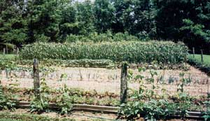

Every year, Doris and James plant a arge vegetable garden and preserve much of their harvest for the winter. With a garden and orchard, a pond for fishing and woods for hunting, the couple rarely needs to purchase food.